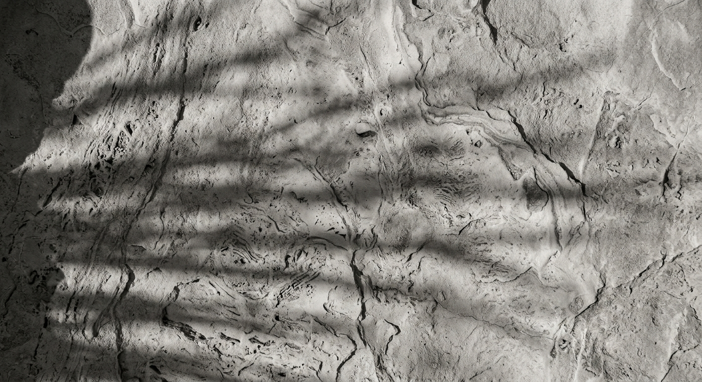
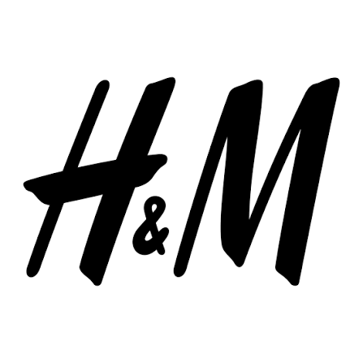
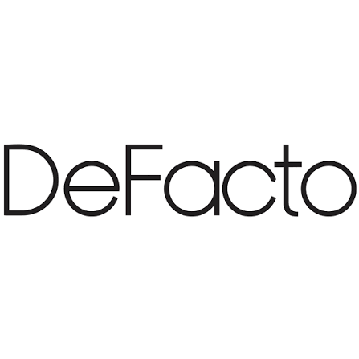
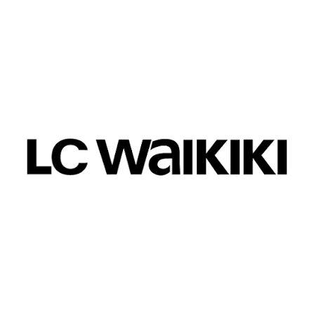
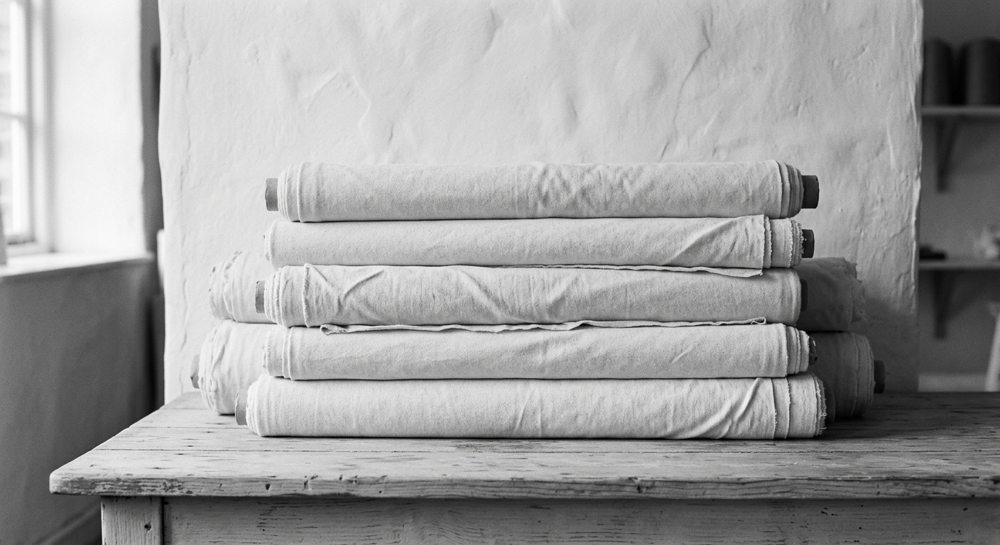
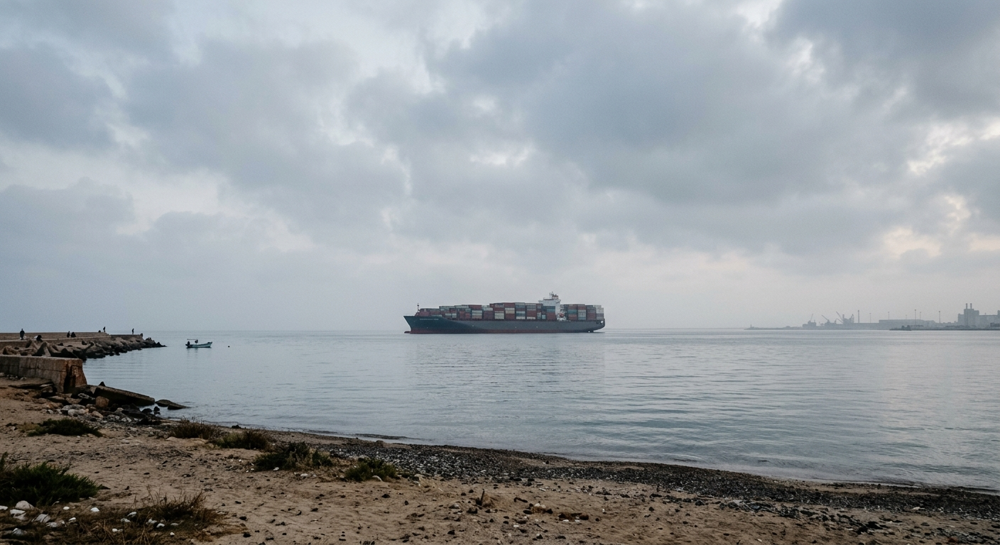

Soft to the hand.
Held to a standard.
We cut, sew, print and pack knitwear under one roof in 10th of Ramadan City, for retailers in Europe, the UK and the United States. Sixteen lines running today. Every order recorded from roll to carton.

Silk is the garment.
Stone is the factory.
The product is soft, finished and easy to handle. The operation behind it is fixed, measured and does not move.
Silkstone Fashion is an Egyptian and Spanish partnership between Boldbridge Capital and Aletex Group. European buying discipline, Egyptian production depth, one factory. We say only what we can show, and we can show every stage.
About the company and its partnersEvery stage, under one roof.
Fabric sourcing
Yarn and fabric from Egyptian and partner mills. Origin documented.
Fabric inspection
Every roll through the inspection machine before it is cleared.
Cutting
Computerised auto-cutting. Every lay logged with consumption.
Sewing
Sixteen lines, operation by operation, output recorded hourly.
Trims
Labels, drawcords, snaps and buttons, each pull-tested.
Print and embroidery
Rotary and continuous printing and embroidery, in house.
Packing
Final inspection, metal detection, export cartons.
Basics, made properly.
T-shirts, sweatshirts and hoodies to your tech pack. Composition, weight and finish are yours to set. Open the wardrobe to see each garment, its specification and a 3D model.
Open the wardrobe



And retailers in the United States. Shipping worldwide.



One order, followed from roll to carton.
Each roll, lay, line and print run is recorded against the order in our ERP. Buyers can see production status and quality reports as they happen. Ask about any carton and the answer comes from the record.
Follow a sample orderClose to Europe. Built for export.
Duty free into the EU and UK. Duty free into the United States through the QIZ scheme. Mediterranean ports days from Europe. Cotton at the source.
The case for Egypt